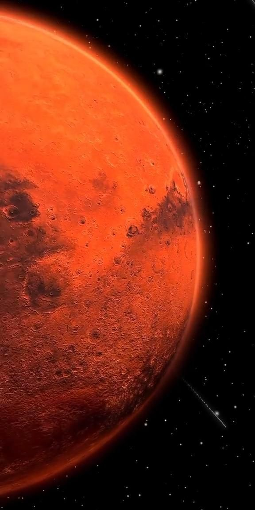

Mars — The Red Frontier
Overview
Mean Radius: 3,389.5 km
Mass: 6.417 × 10²³ kg
Orbital Period: 687 Earth days
Solar Day: 24.6 hours
Axial Tilt: 25.19°
Distance: ~227.9M km from Sun
Atmosphere
- Mostly CO₂ (~95.3%), N₂ (2.7%), Ar (1.6%)
- Pressure: ~0.6% of Earth's
- Frequent dust storms, including planet-wide events
Surface
- Home to Olympus Mons (tallest volcano) and Valles Marineris (largest canyon)
- Polar ice caps of CO₂ and water ice
- Signs of ancient riverbeds, delta formations
Moons
- Two small moons: Phobos and Deimos
- Likely captured asteroids
Exploration
- Numerous orbiters, landers, and rovers: Viking, Pathfinder, Spirit, Opportunity, Curiosity, Perseverance
- Ingenuity helicopter demonstrated powered flight
- ESA's ExoMars mission aims to search for past life
Future Prospects
Mars is a prime target for human colonization due to its day length and presence of frozen water. Research continues on terraforming possibilities and long-term habitation.